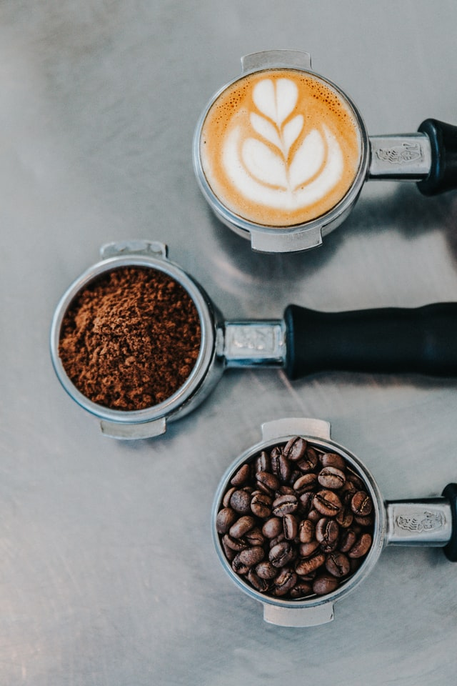

Coffee is a brewed drink prepared from roasted coffee beans, the seeds of berries from certain flowering plants in the Coffea genus. From the coffee fruit, the seeds are separated to produce a stable, raw product: unroasted green coffee. The seeds are then roasted, a process which transforms them into a consumable product: roasted coffee, which is ground into fine particles that are typically steeped in hot water before being filtered out, producing a cup of coffee. 
Coffee is darkly colored, bitter, slightly acidic and has a stimulating effect in humans, primarily due to its caffeine content. It is one of the most popular drinks in the world and can be prepared and presented in a variety of ways (e.g., espresso, French press, caffè latte, or already-brewed canned coffee).
It is usually served hot, although chilled or iced coffee is common. Sugar, sugar substitutes, milk or cream are often used to lessen the bitter taste or enhance the flavor. It may be served with coffee cake or another sweet dessert, like doughnuts. A commercial establishment that sells prepared coffee beverages is known as a coffeehouse or coffee shop (not to be confused with Dutch coffeeshops selling cannabis).